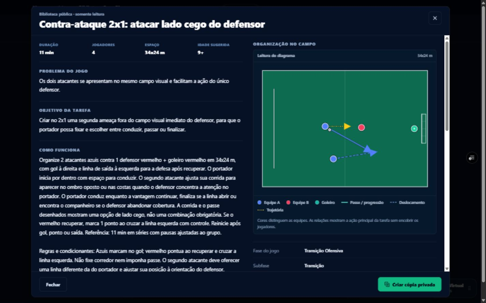
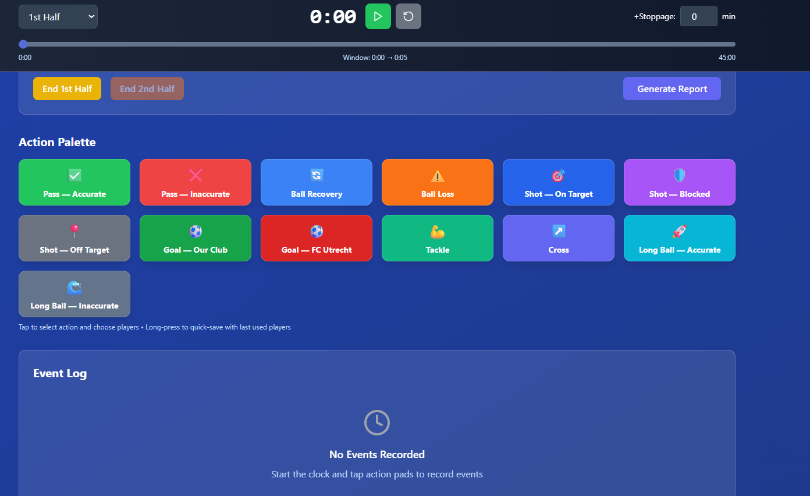

STARTER€9.99 / mês
Para organizar exercícios, planejamento e elenco sem espalhar a rotina por várias ferramentas.
- Planejamento semanal
- Planejamento mensal
- Exercícios próprios
- Cadastro de atletas
- Assiduidade
GAMEPLAN / FOOTBALL COACHING
Encontre uma tarefa pelo problema do jogo, leia sua organização e decida como usá-la no seu trabalho.

O PROCESSO
Princípio, comportamento, tarefa e revisão dão continuidade ao trabalho. Use as áreas do GamePlan para registrar suas referências. Você escolhe as relações e interpreta o que acontece em campo.
01 / MODELO DE JOGO
Registre princípios e comportamentos observáveis usando a sua linguagem. O GamePlan organiza a ideia sem obrigar você a adotar uma metodologia pronta.
Comece pela sua referência. Conexões e decisões dependem do contexto de cada trabalho.
02 / TREINO
Neste 2x1, o apoio procura sair do campo visual do defensor. Leia o objetivo, a organização e as possibilidades da tarefa antes de decidir como usá-la.
Método de treino e Organização da atividade permanecem separados.
DEMONSTRAÇÃO
Uma demonstração gravada das áreas do GamePlan. A gravação pode mostrar uma versão anterior da interface.
03 / PLANEJAMENTO
Leve objetivos e exercícios para a semana e mantenha visível o motivo de cada sessão. Ajustes continuam sendo decisões do treinador.
04 / ATLETAS
Observações, desenvolvimento, Teste Tático e assiduidade ajudam a reconstruir o contexto de cada atleta. Nenhum desses registros, sozinho, prova desenvolvimento.
05 / PARTIDA
Registre ações e observações da partida e volte às mesmas referências usadas no planejamento. O dado registrado e a interpretação do treinador permanecem coisas diferentes.

06 / REFLEXÃO
Retome o que observou, considere o contexto e registre o próximo trabalho. Você decide o que manter, ajustar ou investigar.
Princípios, comportamentos e referências do seu modelo.
Semanas e meses construídos a partir do que você quer treinar.
Tarefas próprias e Biblioteca GamePlan para clonar e adaptar.
Observações e histórico individual com contexto.
Situações para observar leitura e decisão sem automatizar conclusões.
Ações e evidências para voltar ao que foi planejado.
POR QUE O GAMEPLAN EXISTE
Minha relação com o futebol começou com meu avô, Adão, treinador amador. Em 2017 comecei a trabalhar como treinador nos Estados Unidos e, depois, passei por diferentes clubes e contextos até chegar à Holanda.
Na prática, modelo de jogo, planejamento semanal, anotações de treino e revisão da partida ficavam em lugares diferentes. Voltar a uma decisão significava reconstruir o contexto.
O GamePlan nasceu para manter esse processo ligado. A plataforma organiza as referências; a metodologia, a leitura do jogo e a decisão técnica continuam com o treinador.
RENAN MONIZ / FUNDADOR
PLANOS
Use os 7 dias para levar seu próprio planejamento ao produto. Depois, escolha o plano que combina com o que você realmente usa.
Para organizar exercícios, planejamento e elenco sem espalhar a rotina por várias ferramentas.
Para conectar modelo de jogo, treino, atletas e partida no mesmo processo.
COMECE COM O SEU TRABALHO
Planeje com seus princípios, use seus exercícios e veja se o fluxo acompanha o seu jeito de trabalhar.
Testar por 7 dias